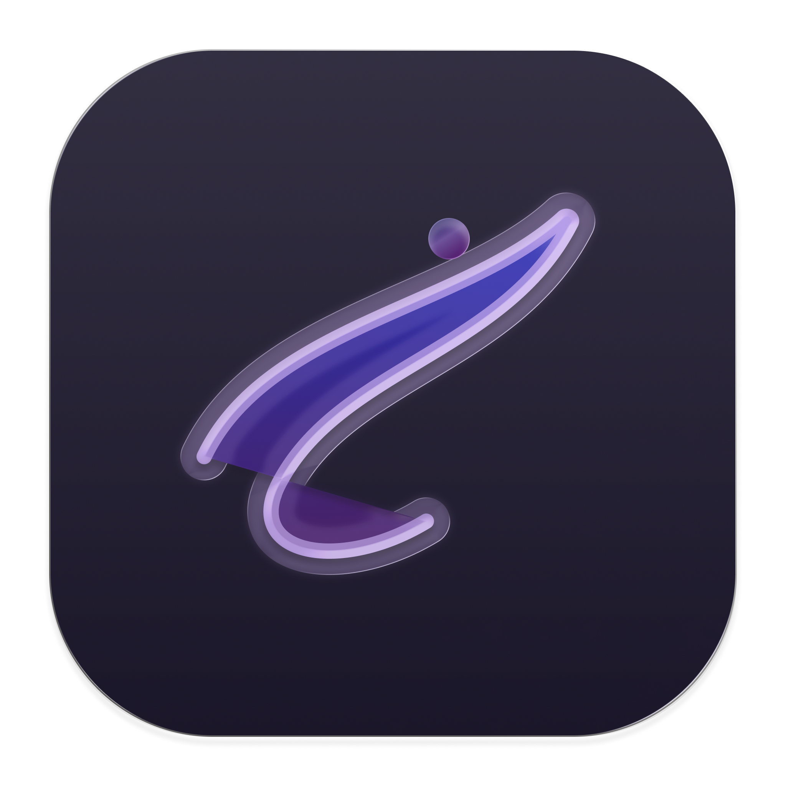

Serein
A browser that doesn't track you. No ads, no profiling, no distractions.
Your browsing data stays local. No trackers, no servers collecting profiles.
Clean interface. No clutter, no notifications fighting for attention.
Lightweight engine. Blocks what slows you down before it loads.
Getting started
Download
Get Serein. Runs on Mac, Windows, and Linux.
Set as default
Make it your primary browser. Takes 30 seconds.
Browse
Everything else is automatic. Trackers blocked, data stays local.
Why choose Serein
Most browsers track every site you visit, every search, every click—then sell it. Serein keeps that data on your machine.
Tracking pixels, ad networks, behavioral profiling—blocked before they load. The web is faster and cleaner.
Not marketing. Not a privacy theater. Actual privacy: open source, auditable, no servers collecting your activity.
What's included
Tracker blocking
Ads, analytics, profiling networks—all blocked before they connect.
Minimal UI
Address bar, tabs, settings. Nothing you don't need.
Fast rendering
No bloat. Pages load and respond quickly.
Open source
Code is public. Audit it, contribute to it, verify it yourself.
Local sync
Bookmarks and settings sync across devices. Everything stays encrypted locally.
Keyboard navigation
Tab through everything. No mouse needed unless you want it.
Get Serein
Free and open source. Always will be.